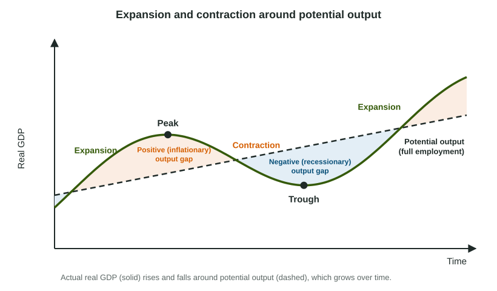

Ups and downs around a rising trend
Real GDP does not grow smoothly. For a few years it rises quickly, firms hire and unemployment falls; then spending slows, firms cut back and unemployment rises. These repeated swings are the business cycle. Underneath them is a steadier line: the economy's potential output, the real GDP it produces when unemployment is at its natural rate (full employment). Potential output grows over time as the economy gains workers, capital and better technology, and actual real GDP moves above and below it.

Two phases and two turning points
- Expansion: real GDP rises. Firms hire, unemployment falls, and near the end inflation tends to pick up.
- Contraction: real GDP falls. Firms cut production and lay off workers, so cyclical unemployment rises, and inflation tends to slow.
The peak is the turning point where an expansion ends; the trough is where a contraction ends and the next expansion begins. Peak and trough are points in time, not phases. A recession is a severe, lasting contraction. In the United States a committee of economists dates recessions as a significant, widespread fall in activity lasting more than a few months; a common rule of thumb is two quarters in a row of falling real GDP.
The output gap
The output gap compares where the economy is with where it could sustainably be:
| Negative (recessionary) gap | No gap | Positive (inflationary) gap | |
|---|---|---|---|
| Real GDP | Below potential | Equal to potential | Above potential |
| Unemployment | Above the natural rate: cyclical unemployment | At the natural rate: full employment | Below the natural rate |
| Inflation | Tends to slow | Steady | Tends to rise |
| On a PPC | A point inside the curve | A point on the curve | Output stretched beyond its sustainable level for a while |
How can output exceed potential? Potential is the sustainable level, not the physical maximum. In a boom firms run extra shifts and pay overtime, and some people put off retiring, so output can rise above potential for a while. Workers and capacity are stretched, firms bid up wages and raise prices, and inflation rises.
Worked example: reading a cycle (invented data, billions of dollars).
| Quarter | 1 | 2 | 3 | 4 | 5 | 6 | 7 | 8 | 9 | 10 |
|---|---|---|---|---|---|---|---|---|---|---|
| Real GDP | 100 | 103 | 106 | 108 | 107 | 104 | 101 | 102 | 105 | 108 |
| Potential | 100 | 101 | 102 | 103 | 104 | 105 | 106 | 107 | 108 | 109 |
Phases. Expansion from Quarter 1 to 4; peak in Quarter 4; contraction from Quarter 4 to 7; trough in Quarter 7; expansion again from Quarter 7.
Gaps. Quarter 4: , a positive (inflationary) gap. Quarter 7: , a negative (recessionary) gap.
The slip: writing the gap with the wrong sign. Subtract potential from actual, and say whether output is above or below potential.
Linking the cycle to unemployment
Cyclical unemployment and the output gap are two views of the same thing. If Halvet's unemployment rate rises to 7.0% while its natural rate is 4.5%, cyclical unemployment is , and real GDP must be below potential output: a recessionary gap. If Berovia's unemployment is 3.0% with a natural rate of 5.0%, output is above potential: an inflationary gap.
The chain to explain a downturn: total spending falls, so firms sell less and produce less; real GDP falls below potential (a negative output gap); firms need fewer workers, so cyclical unemployment rises. Later units of the AP® Macroeconomics course model these swings with graphs and show how the economy can return to potential output.